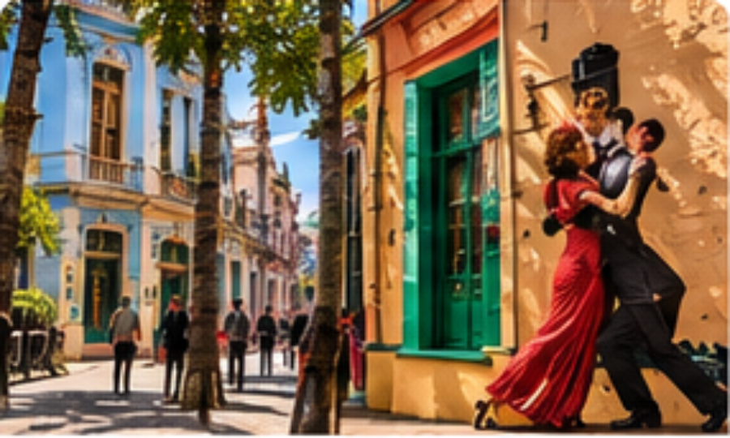
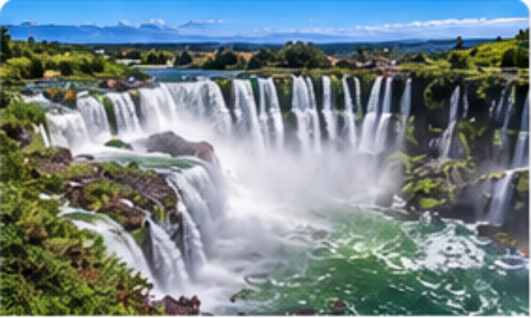
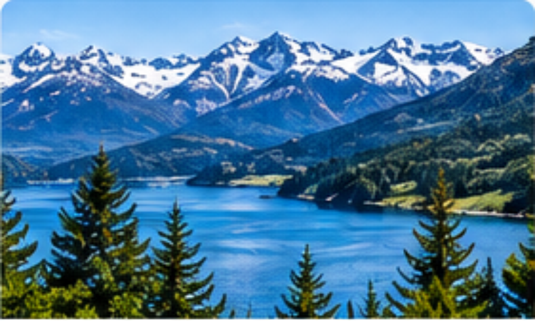
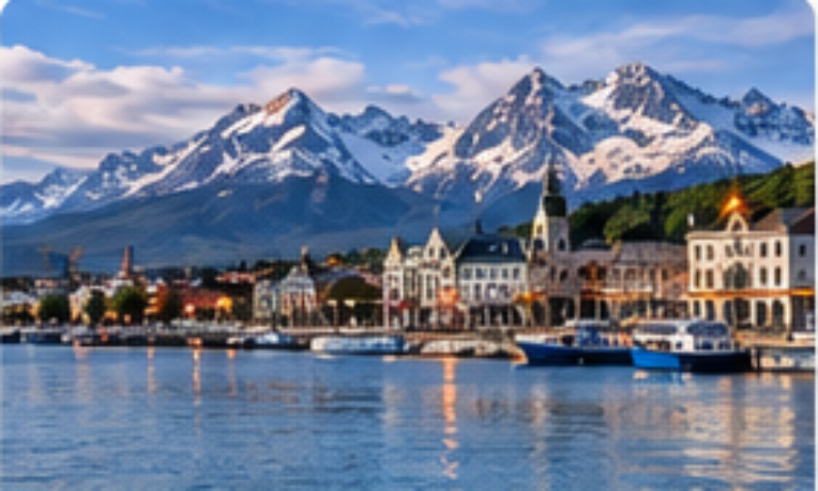
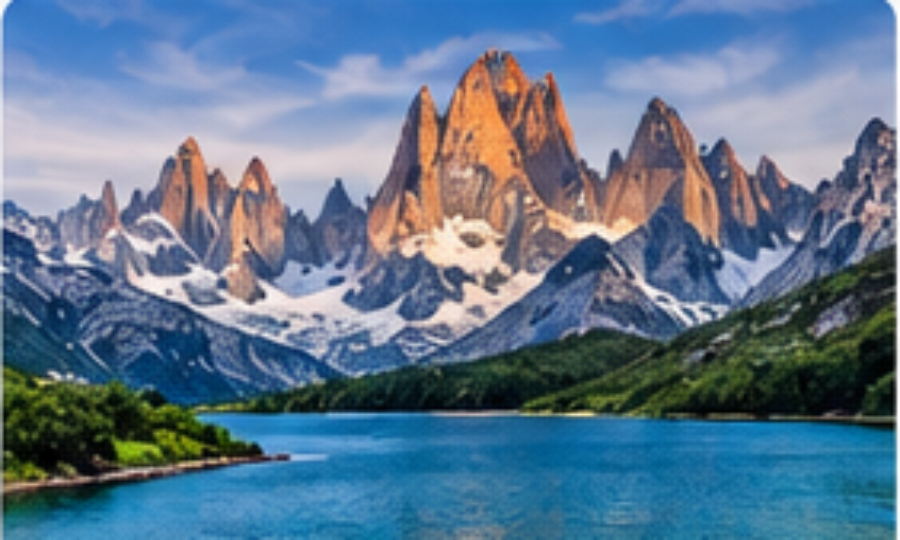
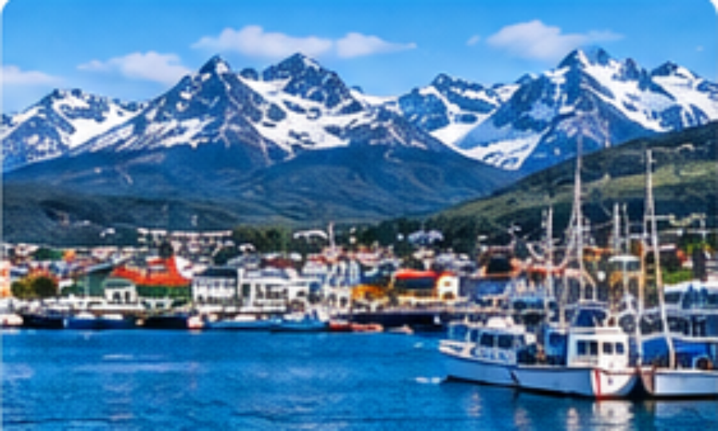

ארגנטינה וצ׳ילה · 15.10–6.12.2026
תמונה, תאריכים וסטטוס — במבט אחד.

16–18 Oct 2026
🛏️ 1 לילה
✓ הוזמן · 20–22/1018–21 Oct 2026
🛏️ 3 לילות21–27 Oct 2026
🛏️ 6 לילות
✓ הוזמן · 28/10–01/1127 Oct–2 Nov 2026
🛏️ 6 לילות2–8 Nov 2026
🛏️ 6 לילות8–14 Nov 2026
🛏️ 6 לילות14–20 Nov 2026
🛏️ 6 לילות
✓ הוזמן19–21 Nov 2026
🛏️ 2 לילות
✓ הוזמן · W Trek21–25 Nov 2026
🛏️ 4 לילות
✓ הוזמן · 26–30/1126–30 Nov 2026
🛏️ 4 לילותפתיחה רגועה: Palermo/Recoleta, San Telmo, parrilla ו־Tango אם בא לך. להשאיר אנרגיה להמשך.
פתחי מדריך יעד ↗מפלים, הצד הארגנטינאי + יום לצד הברזילאי. לתכנן את הפארק סביב שעות פתיחה ומזג האוויר.
פתחי מדריך יעד ↗בסיס לצפון־מערב: Purmamarca, Salinas Grandes, Quebrada de Humahuaca ו־Iruya לפי קצב ומזג אוויר.
פתחי מדריך יעד ↗אגמים, Cerro Campanario, Circuito Chico, טיולים רגליים באזור Nahuel Huapi ויום גמיש למזג האוויר.
פתחי מדריך יעד ↗החלק ההרפתקני: כבישי עפר, Cerro Castillo, Río Tranquilo וה־Marble Caves. לתדלק בכל הזדמנות ולשמור מרווח.
פתחי מדריך יעד ↗Fitz Roy, Laguna Torre, Laguna de los Tres ו־Loma del Pliegue Tumbado. שישה לילות נותנים מרווח מזג אוויר.
פתחי מדריך יעד ↗Perito Moreno, שייט/פעילות קרח, Laguna Nimez ויום באפר. בסיס נוח לפני Torres.
פתחי מדריך יעד ↗הבסיס להתארגנות לפני Torres: אוכל, ציוד, כביסה, מזומן, בדיקת מזג אוויר ואוטובוס/העברה לפארק. אין כאן תאריך מומצא — ברגע שתאריך הלינה ידוע אפשר לעדכן גם את לוח הזמנים.
פתחי מדריך Puerto Natales ↗זה העוגן של החלק הדרומי. כל המעברים לפניו צריכים להגן על התאריך 21.11 ולא להשאיר הימור מיותר.
פתחי מדריך יעד ↗Tierra del Fuego, Laguna Esmeralda, Beagle Channel ויום התאוששות אחרי Torres.
פתחי מדריך יעד ↗סיום בלי לחץ: אוכל, קניות, כביסה, מנוחה ו־מרווח גדול לטיסה הבינלאומית ב־4.12.
פתחי מדריך יעד ↗מפה מקומית — עובדת גם בלי אינטרנט. לחצי על יעד כדי לראות תאריכים וקישור חיצוני ל־Google Maps.
אלה טיסות שכבר תועדו כהזמנות — הן לא נחשבות יותר כמשימות פתוחות.
הדביקי אישור Booking.com או חברת תעופה, או ייבאי קובץ. האפליקציה תציג מה הוזמן ומה עדיין חסר לפי תאריך.
| # | יעד | תאריכים | קו רוחב | קו אורך | הערה |
|---|---|---|---|---|---|
| 1 | Buenos Aires 🇦🇷 | 16–18 באוקטובר | -34.6037 | -58.3816 | פתיחה |
| 2 | Iguazú 🇦🇷 | 18–21 באוקטובר | -25.6953 | -54.4367 | מפלים |
| 3 | Salta & Jujuy 🇦🇷 | 21–27 באוקטובר | -24.7821 | -65.4232 | צפון־מערב |
| 4 | Bariloche 🇦🇷 | 27 באוקטובר–2 בנובמבר | -41.1335 | -71.3103 | אזור האגמים |
| 5 | Carretera Austral 🇨🇱 | 2–8 בנובמבר | -45.5712 | -72.0685 | נהיגה והרפתקה |
| 6 | El Chaltén 🇦🇷 | 8–14 בנובמבר | -49.4315 | -72.8863 | Fitz Roy |
| 7 | El Calafate 🇦🇷 | 14–20 בנובמבר | -50.3370 | -72.2648 | Perito Moreno |
| 8 | Torres del Paine 🇨🇱 | 21–25 בנובמבר | -50.9423 | -73.4068 | W Trek |
| 9 | Ushuaia 🇦🇷 | 26–30 בנובמבר | -54.8019 | -68.3030 | Beagle / Tierra del Fuego |
| 10 | Buenos Aires 🇦🇷 | 1–4 בדצמבר | -34.6037 | -58.3816 | סיום + טיסה |